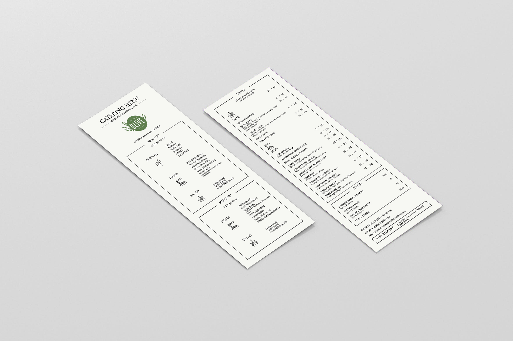
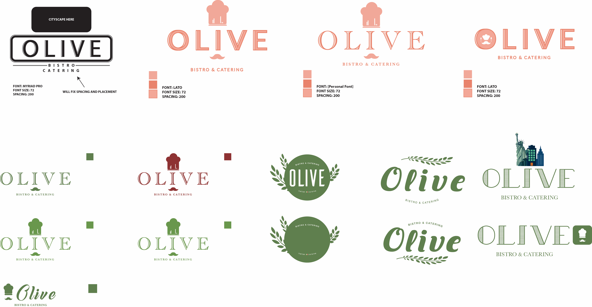
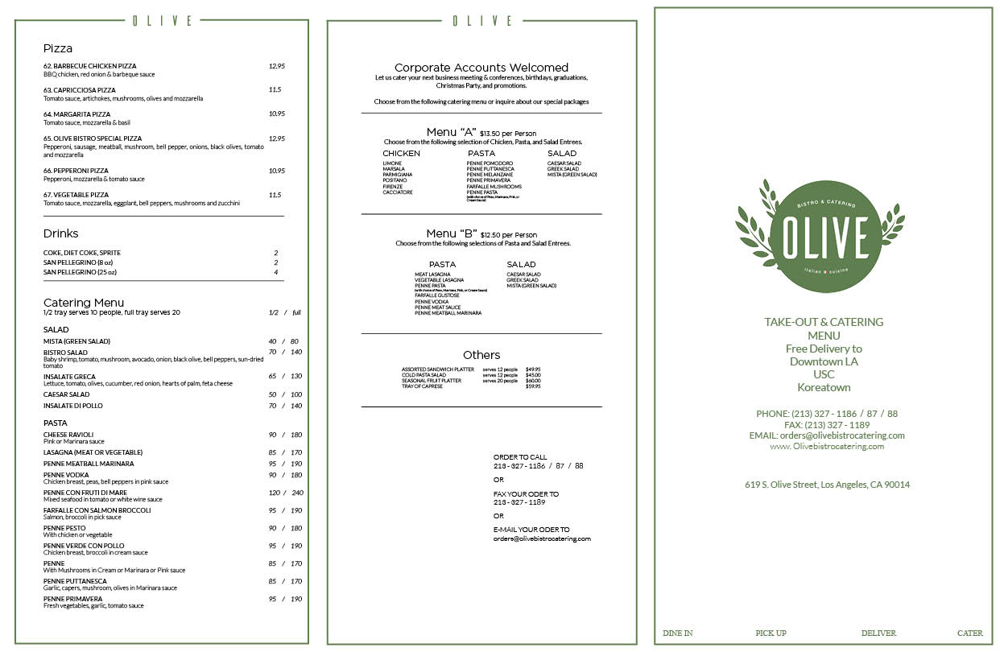
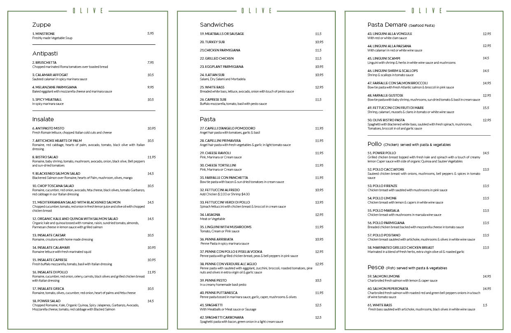
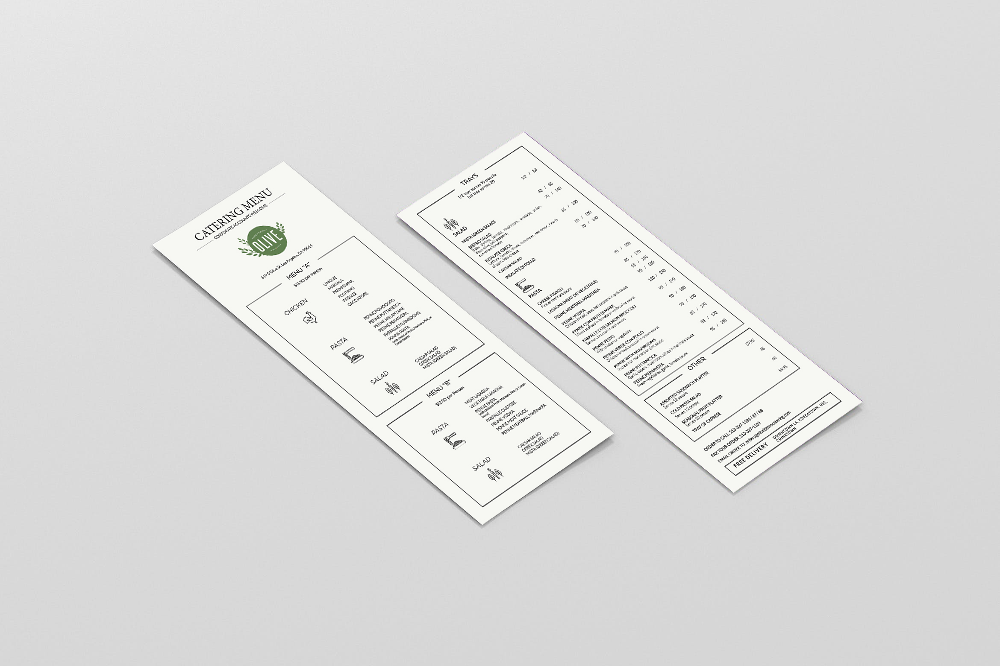
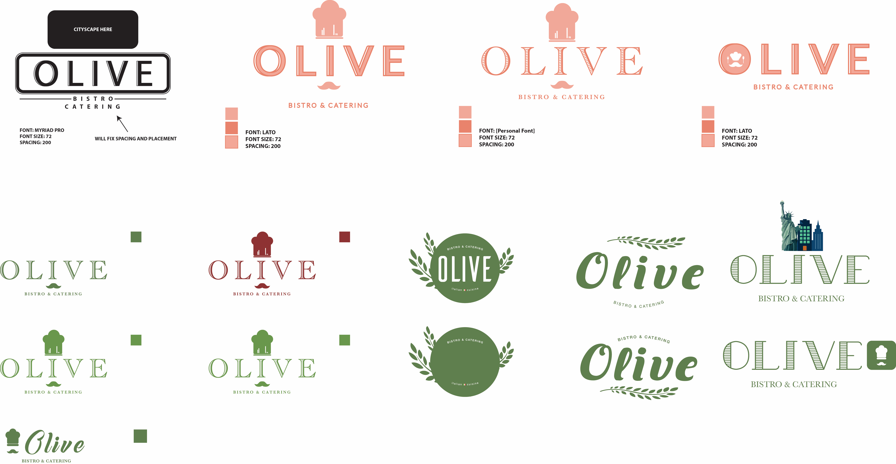
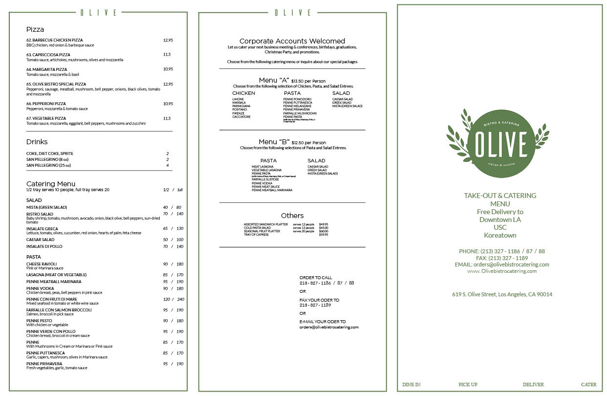
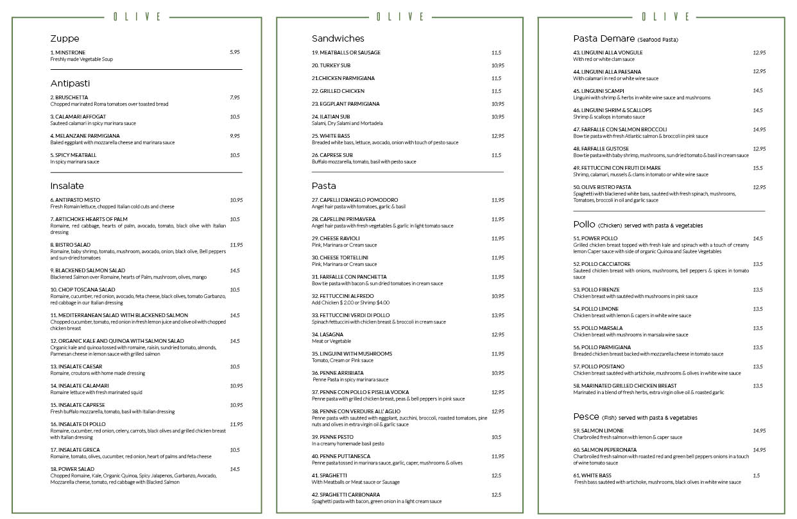

OLIVE ITALIAN BISTRO
FREELANCE BRANDING
Identifying the Problem
The previous Olive restaurant's brand image and value was significantly low compared to the quality of the food. The design of the menu was lacking hierarchy making it hard for customers to read and their sales were low from ineffective advertisement.
Components of Rebranding
Logo
Takeout Menu
Catering Menu
Vision
Essentially establish a brand identity that stands on simplicity, elegance, and representation of restaurant atmosphere
Identifying the Problem
The previous Olive restaurant's brand image and value was significantly low compared to the quality of the food. The design of the menu was lacking hierarchy making it hard for customers to read and their sales were low from ineffective advertisement.
Components of Rebranding
Logo
Takeout Menu
Catering Menu
Vision
Essentially establish a brand identity that stands on simplicity, elegance, and representation of restaurant atmosphere

 






